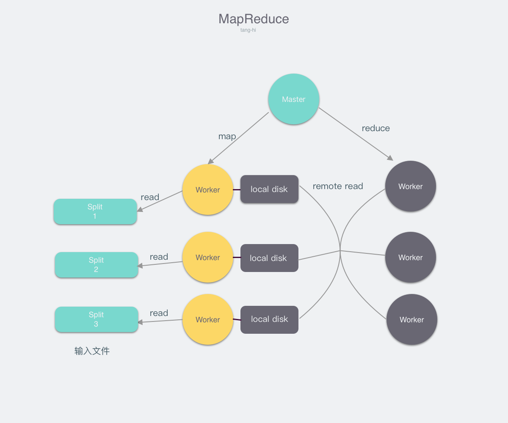

MapReduce
MapReduce是谷歌在2004年发表的论文,根据它在论文中的描述
MapReduce is a programming model and an associated implementation for processing and generating large data sets. Users specify a map function that processes a key/value pair to generate a set of intermediate key/value pairs, and a reduce function that merges all intermediate values associated with the same intermediate key. Many real world tasks are expressible in this model, as shown in the paper.
MapReduce本质上是为了处理大数据而诞生的框架，它含有两个原语，分别是Map和Reduce(从函数式编程中借鉴过来的概念)，而这两个原语因为抽象程度高，因此可以相互组合完成大部分的大数据处理任务
- Map: 将一组数据转化为另一组数据,可以将这个任务看作输入为一个单一元素，输出为一个tuple的建值对
- Reduce: 将多个Map任务的结果按Key聚合后作为输入, 对该输入进行计算后输出最终结果
MapReduce解决了什么问题
- 通过分布式的方法解决大数据处理的问题
- Fault Tolerance (可以部署在商用服务器上，容忍一定的机器损坏)
- 程序员只需专注于编写数据的处理程序(即map和reduce这两个函数),无需关注分布式的问题,便可以让其进行分布式计算
MapReduce的实现
Many different implementations of the MapReduce interface are possible. The right choice depends on the environment. For example, one implementation may be suitable for a small shared-memory machine, another for a large NUMA multi-processor, and yet another for an even larger collection of networked machines
根据论文中的描述,MapReduce只是一个计算模型，你可以按照你自己的需要，设计并实现最适合你需求的架构.在这里我们介绍谷歌所使用的架构.

角色描述
从图中我们可以看出在整个MapReduce中有三种不同的角色
- InputFile: 待处理的输入文件
- Master: 调度整个任务的执行，并且检测Worker是否存活
- Worker: 听从Master调度,并执行用户指定的Map或者Reduce任务
我们先详细介绍这三种不同的角色，然后描述MapReduce的总体流程
-
InputFile
因为MapReduce的应用场景是大数据处理，所以输入的文件较大，往往是无法完全放在内存之中，因此我们需要将输入的文件分割为 大小相等的文件块(split1, split2, split3....),在谷歌的实现中,文件分割后，每份大小为16-64MB -
Master
Master是一个较为特殊的角色，全局仅有一个Master,它有以下的几个职责- 监听Worker状态,当Worker处于Idle状态时，给他分配任务(map/reduce)
- 通过心跳探活Worker,当Worker宕机时,执行容灾操作，即重新执行.
- 提供给Worker需要的信息,以使其正常运行.
- Worker
Worker是实际执行用户编写程序的角色，它听从Master的调度（执行map或者reduce）,并且从Master那里获得执行程序所需要的一切信息 并将执行结果反馈给Master.
总体流程
- 用户提交需要计算的任务,和输入文件
- Master接收到任务后，任务会被分解为M个Map任务，R个Reduce任务.
- Master不断选择处于Idle状态的机器，并让他们执行Map任务，直至Map任务被全部执行完成.
- 被调度执行Map任务的Worker会读取对应的文件分片，并对该文件进行解析后作为用户Map程序的输入，然后将Map输出的键值对缓存在内存之中,最终写在本地磁盘上. 写在磁盘上的键值对文件，会根据Key划分为R个文件. ie.(K % R)
- 当Map执行完成后会向Master汇报执行完成，并且将所有键值对文件的位置告知Master
- 当所有Map任务完成后，Master会选择状态处于Idle的Worker,让其执行Reduce任务，同时会告知他所需要处理的键值对文件位置
- 当Worker被调度执行Reduce任务时, 他首先会发起一个rpc来读取键值对文件,当他将所有文件读取完毕后,他对键值对进行排序,这样子相同键的键值对就会聚集在一起 如果键值对文件过大，无法全部保存在内存之中，那么需要进行外排序.Worker最后将具有相同键的值聚合在一起形成(Key, list Value)传给Reduce函数进行计算,并将结果 写在文件中
- 当所有的Reduce执行完成后,MapReduce也就执行结束了.
MapReduce如何解决了那些问题
- 通过分布式的方法解决大数据处理的问题
通过一台Master来调度多台Worker可以实现分布式计算，同时我们可以注意到Master中需要记录的Worker信息所需要的存储空间较小 因此可以使用上千的Worker来同时计算,而不会给Master带来太大的负担. -
Fault Tolerance
- Master Fail
Master会周期写内部数据的checkpoint,如果Master宕机，一个新的备份机器可以通过读取checkpoint来恢复状态. 我们可以发现根据以上的设计,Master宕机后就算丢失了一些任务的进度，例如,不知道map_3任务已经执行完成,但是通过 重新执行，对于最后结果的正确性并没有影响. - Worker Fail
如果Worker宕机，那么该Worker完成的所有Map任务全部设置为取消，并且需要全部重新执行,还没有执行完的Map和Reduce任务也全部取消,并需要全部执行. 之所以完成的所有Map任务需要全部重新执行,是因为Map任务的结果写在本地磁盘上，当机器宕机时，这些结果就全部不可获取了，因此需要全部重新执行. 而执行完成的Reduce任务不需要重新执行，是因为Reduce任务的结果写在了分布式文件系统上.我们可以发现，只需要通过简单的重新执行，便可以保证即使机器宕机 仍然可以完成分布式计算.
- Master Fail
-
程序员只需专注于编写数据的处理程序(即map和reduce这两个函数),无需关注分布式的问题,便可以让其进行分布式计算
根据MapReduce的设计，程序员唯一需要做的就是map和reduce这两个函数，其他的分布式调度，容灾等策略均在MapReduce内部完成.
MapReduce的优化
- 任务的粒度:MapReduce一般会划分为M个Map任务和R个Reduce任务,M和R的选择一般会远大于机器数量，这样有利于负载均衡，同时如果机器宕机的话，也可以快速恢复.论文中给的例子是 当有2000台机器时，M=200,000 R=5000
- Backup机制: 实际生产环境中，我们经常会遇到长尾效应,即有某几台机器执行的任务特别慢，从而拖累了整体任务的进度.MapReduce通过Backup机制来解决.即同时给多个机器发出同样的任务 任意一台机器返回结果即视为任务结束.
- Combiner函数: combiner函数是在Map执行后再执行的函数。举一个例子，word count中，因为map函数会产生大量的(the,1),这些数据都会通过网络发送给Reduce 这加大了无谓的网络带宽.因此使用combiner函数可以在map后聚合这些数据，再传给reduce减少网络带宽.
- 跳过Bad Records: 用户编写的Map和Reduce函数可能存在Bug,这就导致当Master给Worker分配任务时，会将该机器打挂，而后Master 再让其他worker重新执行，再次打挂Worker，最坏的可能是把整个集群打挂,因此谷歌在启动MapReduce时，会注册相应的signal handler,当特定的signal被捕获时，例如segment fault等, 会给Master发送一条UDP，当Master发现相同的UDP >= 1时，就会拒绝再次调度对应的map/reduce任务了.